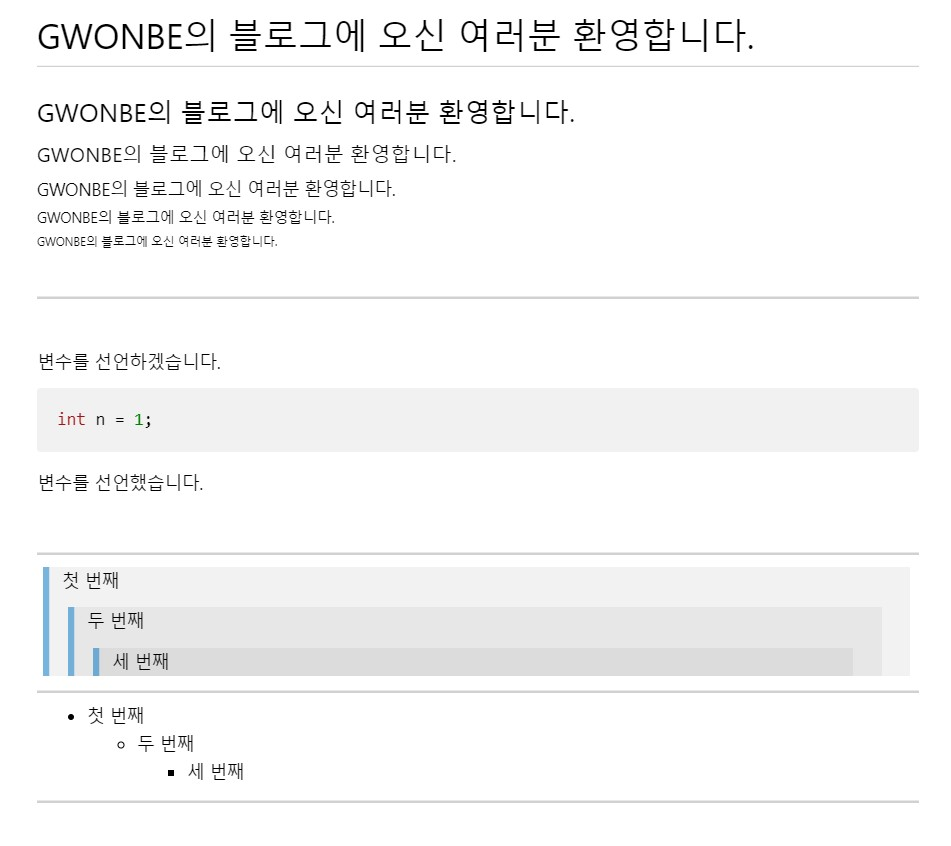

제목
# GWONBE의 블로그에 오신 여러분 환영합니다.
## GWONBE의 블로그에 오신 여러분 환영합니다.
### GWONBE의 블로그에 오신 여러분 환영합니다.
#### GWONBE의 블로그에 오신 여러분 환영합니다.
##### GWONBE의 블로그에 오신 여러분 환영합니다.
###### GWONBE의 블로그에 오신 여러분 환영합니다.
줄 바꿈 및 수평선
<br><hr><br>
글머리 기호
+, -, * 중 골라서 작성합니다. 세 기호 모두 동일하게 출력됩니다.
+ 첫 번째
+ 두 번째
+ 세 번째
- 첫 번째
- 두 번째
- 세 번째
* 첫 번째
* 두 번째
* 세 번째
코드 블럭
변수를 선언하겠습니다.
``` C
int n = 1;
```
변수를 선언했습니다.
인용문
> 첫 번째
>> 두 번째
>>> 세 번째
최종 결과 화면
